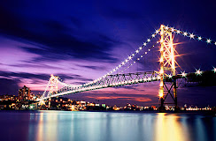
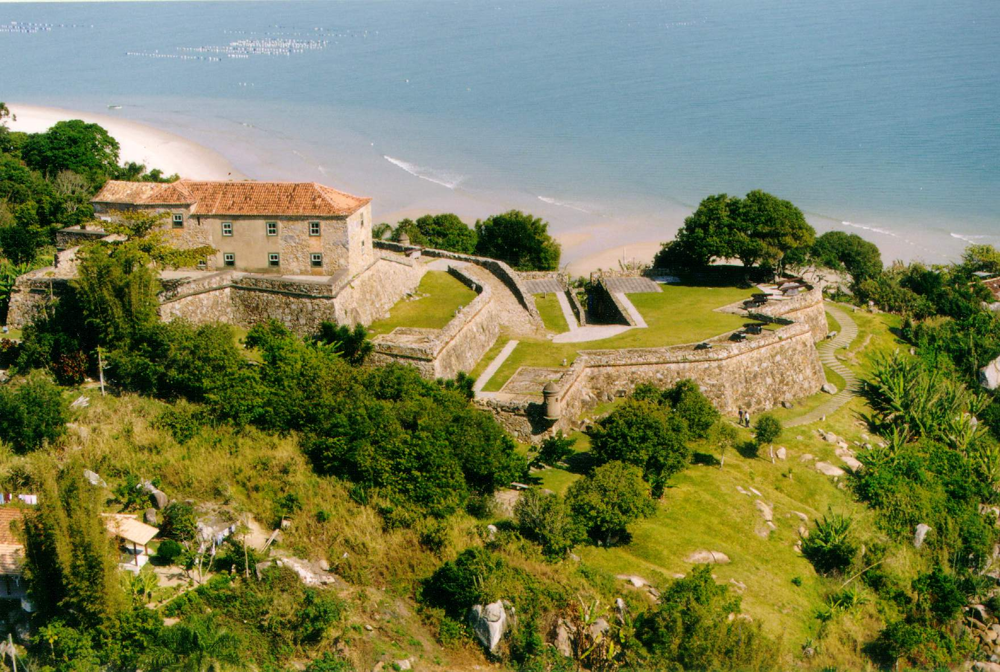

A Ponte Hercílio Luz é uma ponte pênsil localizada em Florianópolis, no estado brasileiro de Santa Catarina, sendo a mais antiga das três que ligam as partes insular e continental da capital catarinense. É a maior ponte …asil, com 821 metros - sendo a maior ponte pênsil sustentada por um sistema de barras de olhal ainda existente[1] - e possui o 132º maior vão pênsil do mundo, com 339 metros. É o símbolo mais famoso da cidade e do estado, sendo a imagem mais reconhecida de ambos. O mirante situado à cabeceira insular proporciona uma das mais belas vistas panorâmicas do Centro de Florianópolis. Na área também está situado o Parque da Luz.
A fortaleza está localizada no norte da Ilha de Santa Catarina, Florianópolis, aproximadamente a 25 quilômetros do centro da cidade. Estrategicamente situada no alto do morro da Ponta Grossa, emoldurada pela beleza dos costões e a areia da Praia do Forte. Esta fortaleza configurava o segundo vértice do triângulo de fogo idealizado pelo Brigadeiro José da Silva Paes. O início de sua construção ocorreu em 1740. Em 1765, para completar a sua defesa no flanco leste, foi construída a Bateria de São Caetano, localizada junto à Praia de Jurerê, a cerca de 200 metros da fortaleza.
Florianópolis é a capital do estado brasileiro de Santa Catarina, na Região Sul do país. O município é composto pela ilha principal, a ilha de Santa Catarina, a parte continental e algumas pequenas ilhas circundantes. A cidade tem uma população de 574 200 habitantes, de acordo com prévia do censo demográfico de 2022 do Instituto Brasileiro de Geografia e Estatística (IBGE). É o segundo município mais populoso do estado (após Joinville) e o 48º do Brasil. A região metropolitana tem uma população estimada de 1 209 818 habitantes, a 21ª maior do país. A cidade é conhecida por ter uma elevada qualidade de vida, sendo a capital brasileira com maior pontuação do Índice de Desenvolvimento Humano (IDH), calculado pelo PNUD, das Nações Unidas.
Veja esse vídeo e intenda as maravilhas de florianópolis